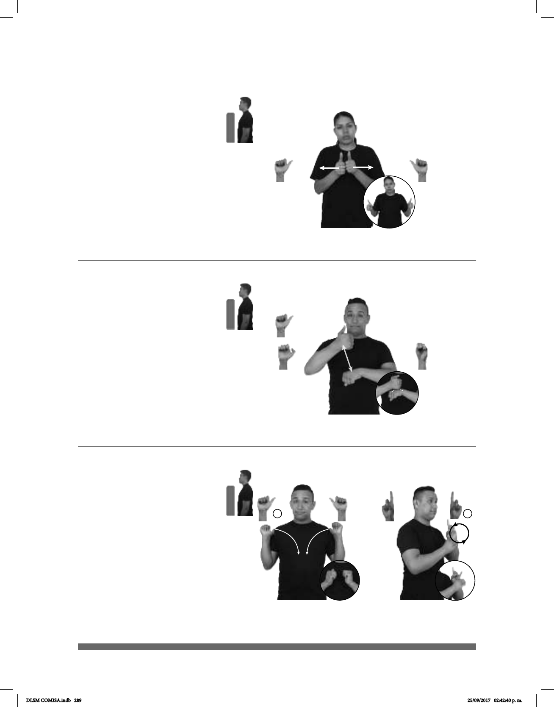

289
Seña: SS
A.1
Las palmas se encuentran
frente a frente.
A la altura del pecho.
Las manos parten de un
mismo punto y luego se abren hacia los
lados.
v. tr. Alejar a una
persona o una cosa de otra cuyo c
ontacto generalmente es dañino,
peligroso o inconveniente; poner o
ponerse fuera de contacto.
Seña: SC: I. SS; II. SB
I. A.1; II. MD y MB D.1
I. y II. Palmas hacia el
centro.
I. De los hombros al pecho;
II. MD y MB a la altura del pecho.
I. Las manos cruzan hacia
el centro y llegan a un punto cercano; II.
MD y MB se mueven formando círculos
hacia el frente alternadamente.
sust. f. Prenda de vestir de
algodón muy grueso que cubre el torso; se
utiliza especialmente para hacer deporte
y sudar.
Seña: SB
MD seña que pasa A.1 a
A.7, MB S.1
MD palma hacia dentro. MB
palma hacia abajo.
A la altura del pecho. MD sobre
MB.
La MD golpea a la MB
repetidamente mientras el dedo pulgar se
retrae.
1. adj. Que sigue al quinto
en orden y precede al séptimo. 2. sust. f.
Nivel escolar que antecede a la secundaria
y sucede al preescolar cuya duración es de
seis años.
(A-169)
pos-MI HERMANO pos-SUYA NOVIO+MUJER SEPARAR YA
Mi hermano terminó con su novia.
Sexto
1
2
(A-170)
SEXTO
Primaria
pro-YO GUSTAR
Yo estoy en sexto año de primaria y me gusta.
1
2
(A-171)
ESCUELA SUDADERA pro-YO DEBER
Debo usar la sudadera en la escuela.
DLSM COMISA.indb 289 25/09/2017 02:42:40 p. m.